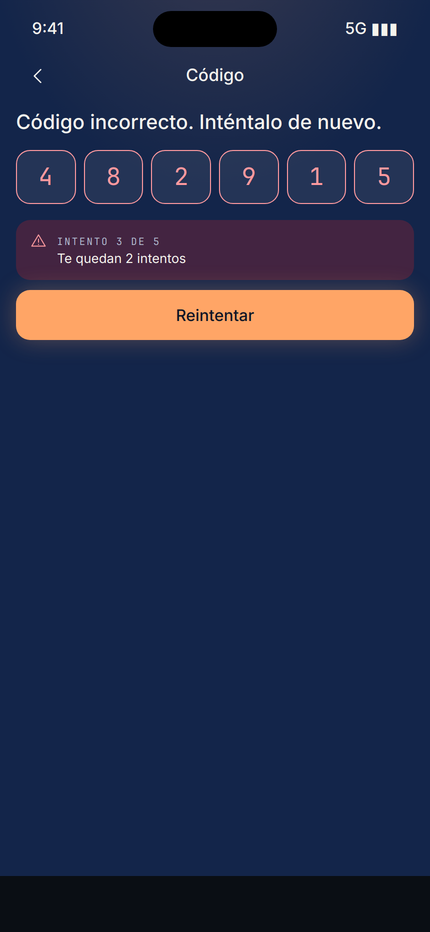
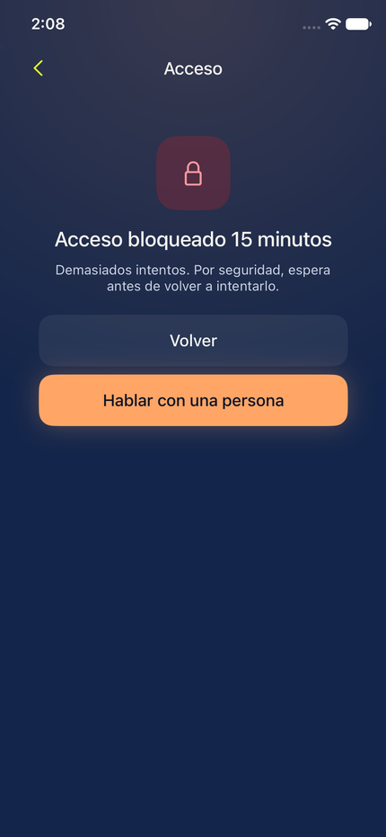
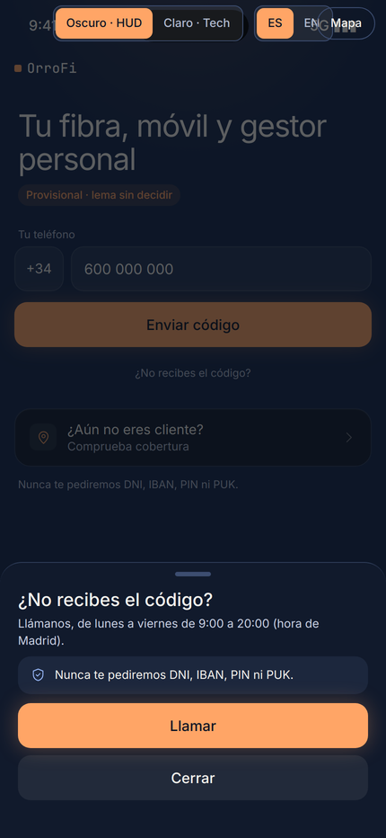
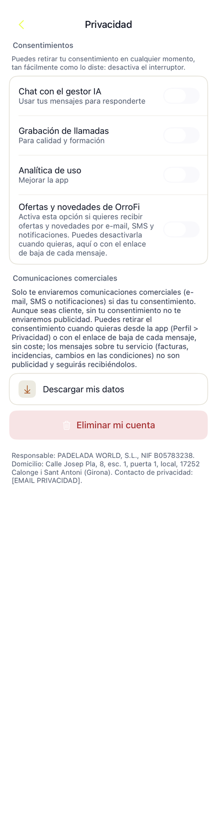
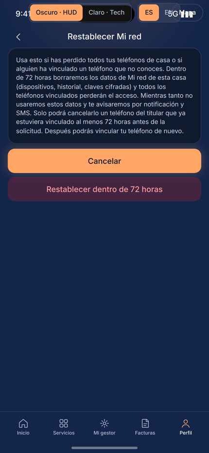
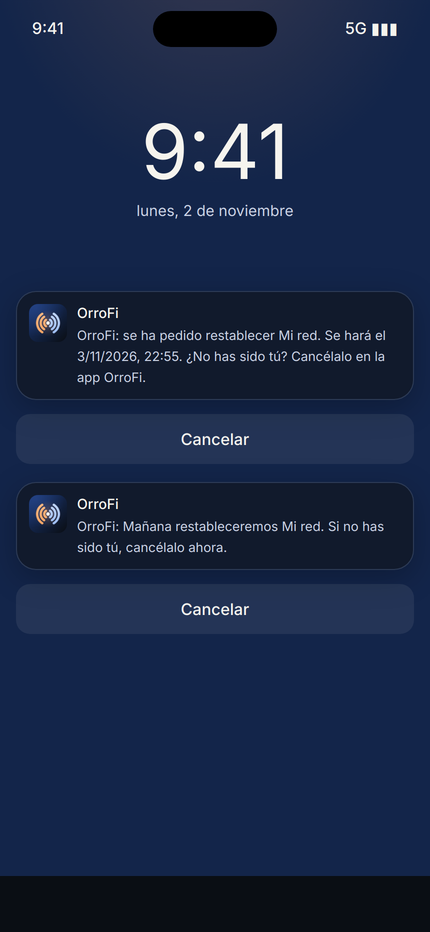
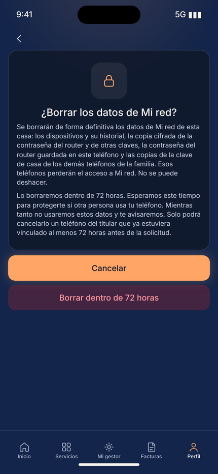

Face ID при открытии
Системный запрос Face ID, если включена защита входа.

Вход, данные, удаление и сброс домашней сети, сигнал, если в аккаунте произошло что-то чужое.
По вопросам данных: privacidad@orrofi.es. При необходимости можно обратиться в испанское агентство по защите данных (AEPD).
Сайт не собирает данные через формы и не использует cookies. Хостинг GitHub Pages (GitHub, Inc., США) технически получает IP-адрес и сведения о браузере при открытии страниц. Если вы пишете нам на privacidad@orrofi.es, PADELADA WORLD SL использует ваше письмо только для ответа (ст. 6(1)(f) RGPD) и хранит его, пока нужно для ответа. Вы вправе получить доступ к данным, исправить, удалить или ограничить их, возразить против обработки и подать жалобу в AEPD (aepd.es). Полная политика конфиденциальности приложения появится до его запуска.
Системный запрос Face ID, если включена защита входа.
Ввод телефона и запрос SMS.
Номер должен совпадать с договором.

Ввод кода, таймер повторной отправки; код из SMS действует недолго.

Сообщение об ошибке, оставшиеся попытки (всего 5).

Код просрочен, запросить новый.

Вход на время закрывается после нескольких неверных кодов.

Подсказка, что делать, если SMS нет.

Согласия, выгрузка данных, удаление аккаунта.

Отложенное удаление.
Нельзя удалить аккаунт, пока действуют договоры.

Подтверждение кодом.
«Удалить ваши данные?».
Выгрузка по запросу на почту.

Приложение просит подтвердить, что вы хотите сбросить сеть.

Кратко объясняет, какие данные Wi‑Fi и устройств исчезнут.
Повторное подтверждение перед серьёзным шагом.
Ввод одноразового кода из SMS.
Сброс назначен на время; до него можно передумать.

Участникам сети уходит письмо о предстоящем сбросе.
Напоминание, что сброс скоро начнётся.
Владелец отменяет сброс, пока это возможно.

Сброс снят, сеть работает как раньше.
Если сбросов слишком много подряд, приложение попросит подождать.
Идёт сброс: подождите, не закрывая экран.
Сеть сброшена; дальше — заново подключить роутер и устройства.
Выберите причину: смена роутера, продажа дома или другое.
Начало цепочки сброса домашней сети Mi red.
Если вы не владелец, сброс недоступен — так защищают чужую сеть.
Система просит Face ID, чтобы никто другой не сбросил сеть.
Повтор Face ID, если первое подтверждение не прошло.

Подтверждение по SMS, что сброс запрашивает именно владелец.
Сообщите в OrroFi, если в журнале сети появилось действие, которого вы не совершали.
Так вы сообщаете о подозрительном действии в аккаунте.

Сообщите в OrroFi, если в журнале сети появилось действие, которого вы не совершали.

Шаг удаления данных домашней сети Mi red. Доступно только владельцу.

Шаг удаления данных домашней сети Mi red. Доступно только владельцу.
Шаг удаления данных домашней сети Mi red. Доступно только владельцу.
Шаг удаления данных домашней сети Mi red. Доступно только владельцу.
Шаг удаления данных домашней сети Mi red. Доступно только владельцу.
Шаг удаления данных домашней сети Mi red. Доступно только владельцу.

Шаг удаления данных домашней сети Mi red. Доступно только владельцу.
Шаг удаления данных домашней сети Mi red. Доступно только владельцу.
Шаг удаления данных домашней сети Mi red. Доступно только владельцу.
Шаг удаления данных домашней сети Mi red. Доступно только владельцу.
Шаг удаления данных домашней сети Mi red. Доступно только владельцу.

Шаг удаления данных домашней сети Mi red. Доступно только владельцу.
Шаг удаления данных домашней сети Mi red. Доступно только владельцу.
Шаг удаления данных домашней сети Mi red. Доступно только владельцу.
Шаг удаления данных домашней сети Mi red. Доступно только владельцу.